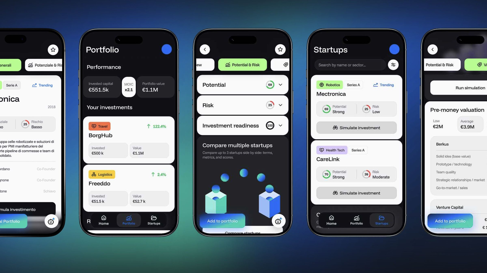
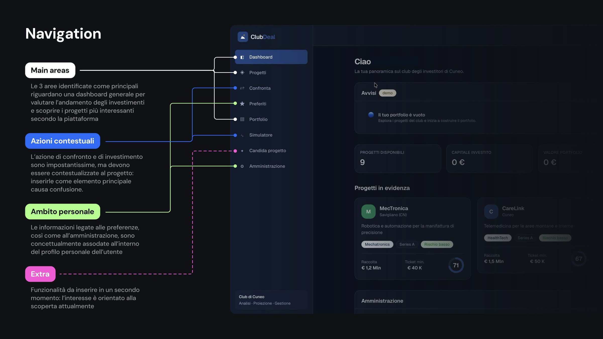
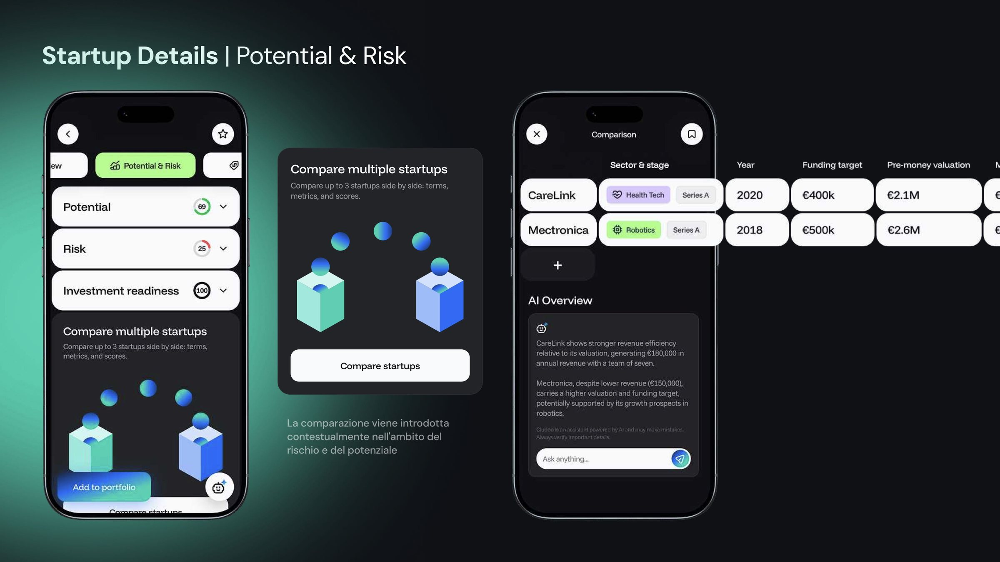
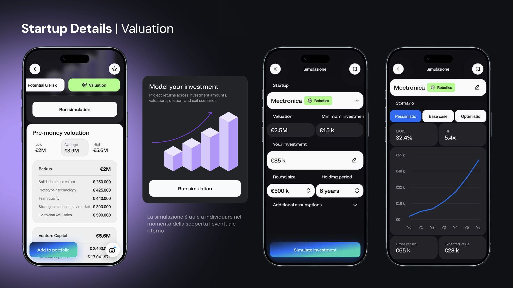

Work/UI/UX
Club Deal
Helping entrepreneurs who don't come from the startup world understand what they're investing in. A platform that connects them with startups in Northern Italy, especially in Piedmont.

Goal
- Make the interface easy to navigate.
- Make it simpler to assess a project.
- Make the information readable for people who understand how a company works but aren't experts in startups.
Navigation
Main areas. A general dashboard to follow how investments are doing and discover the projects the platform rates most interesting, the list of projects, and the portfolio.
Contextual actions. Comparing and investing are key actions, but they only make sense within a project: putting them in the main menu creates confusion.
Personal area. Favourites and account settings belong in the user's profile.
Later on. Features that aren't needed yet stay out: for now the focus is on discovery.

The startup page
Starting from the small screen forces you to set a hierarchy. Whatever survives the constraint is what really matters.
Three sections
Each startup reads in three steps: an overview, the balance between potential and risk, and the valuation.
Potential and risk
Potential, risk and investment readiness become scores you can read at a glance. Comparing startups, up to three at a time, appears right here, in the context of risk and potential, with an AI-generated summary.

Valuation
The pre-money valuation is calculated with several methods and shown as a range between minimum and maximum. The investment simulation, with pessimistic, base and optimistic scenarios, helps you understand the possible return while you're still discovering the startup.
